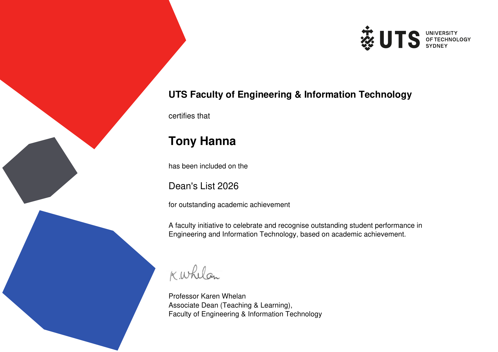

Biomedical Engineering graduate from UTS with experience across biomedical R&D, medical-device servicing, laboratory work, engineering design and data analysis.
Use the buttons below to open the PDF in a new tab or download a copy.
Recognised by the UTS Faculty of Engineering & Information Technology for outstanding academic achievement.

The certificate recognises my inclusion on the 2026 Dean's List based on academic achievement in Engineering and Information Technology.